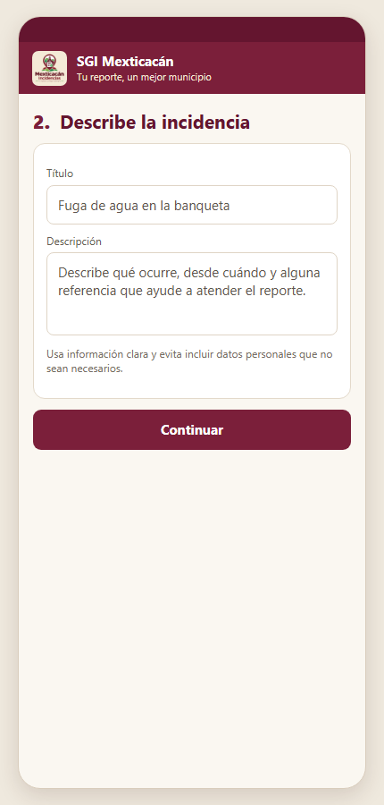

Instrucciones desde el inicio de sesión para ciudadanía y personal municipal
H. Ayuntamiento de Mexticacán, Jalisco
Edición · 15 de octubre de 2026
Perfiles incluidos Ciudadano · Administrador · Encargado de Área · Responsable Operativo
Las pantallas del flujo móvil que aparecen en esta guía son recreaciones ilustrativas basadas en los campos y controles implementados. No son capturas de una sesión en un teléfono real. Las cuentas y el folio de ejemplo son ficticios.
SGI Mexticacán · Manual de uso por perfil15 octubre 2026
Antes de iniciar · acceso
¿Quién puede crear un reporte?
En esta versión, el formulario ＋ Reportar está en la aplicación móvil. El panel web municipal permite gestionar incidencias y cuentas, pero no incluye un botón para crear reportes.
Perfil
Acceso antes de reportar
Alcance al consultar
Ciudadano
Crea su cuenta en móvil desde Regístrate.
Sus reportes.
Administrador
Cuenta institucional creada por el procedimiento administrativo.
Todas las áreas.
Encargado de Área
Cuenta creada por Administrador y ligada a un área.
Reportes de su área.
Responsable Operativo
En el sistema el rol se llama Operativo; usa la cuenta y área asignadas.
Reportes asignados a su cuenta.
Identidad del reporte: el sistema registra como persona que reportó a la cuenta con la que se inició sesión. Si un empleado usa su cuenta municipal, el reporte queda asociado a ese empleado; no se registra como anónimo ni como otro ciudadano.
Inicio de sesión común para las cuatro cuentas
Abre la aplicación móvil SGI Mexticacán instalada o el proyecto de pruebas en Expo Go.
Escribe el correo asignado a tu cuenta y su contraseña; pulsa Iniciar sesión.
Al entrar, abre Mis reportes y pulsa ＋ Reportar.
Ciudadanía que aún no tiene cuenta: pulsa ¿No tienes cuenta? Regístrate, completa nombre, correo y contraseña (mínimo 8 caracteres), confirma la contraseña y crea la cuenta. Las cuentas municipales no se registran desde ese enlace; las crea el Administrador.
Vista ilustrativa de acceso móvil; sustituye el texto de ejemplo por las credenciales de tu propia cuenta. Nunca compartas tu contraseña.
SGI Mexticacán · Manual de uso por perfilAcceso
Flujo común · Mis reportes
Abre el formulario y elige el área
Después de iniciar sesión, el flujo es el mismo en la app móvil para los perfiles autorizados.
1. En Mis reportes, pulsa ＋ Reportar.2. Selecciona un área y una categoría del catálogo.
Si no puedes iniciar sesión: revisa correo, contraseña y conexión. En las cuentas municipales confirma que el usuario esté activo.
Para la ciudadanía: selecciona el servicio donde está el problema.
Para el Encargado: elige el área que tiene asociada su cuenta para que el reporte quede dentro de su ámbito de consulta.
Para el Operativo: confirma con el Encargado a qué área corresponde el problema y solicita asignación del folio a su usuario para el seguimiento.
Selección por perfil: el Ciudadano elige el área del problema. El Encargado debe usar el área que tiene asignada para poder consultar el reporte después. El Operativo debe coordinar el área con su responsable; su bandeja solo muestra reportes asignados a su cuenta.
SGI Mexticacán · Manual de uso por perfilFormulario · 1 de 3
Flujo común · Información del reporte
Describe y documenta el problema

3. Describe: título breve y detalles útiles, como qué ocurre y referencias del lugar.4. Adjunta: de 1 a 5 fotos desde cámara o galería. Concede permisos si el teléfono los solicita.
Evita incluir datos personales innecesarios. Si el envío presenta un error, verifica primero Mis reportes o pide al área municipal revisar el folio antes de repetirlo.
Evita duplicados: si la app muestra un error al enviar, verifica primero Mis reportes o pide al área municipal revisar el folio antes de repetir el envío.
SGI Mexticacán · Manual de uso por perfilFormulario · 2 de 3
Flujo común · Ubicación y confirmación
Ubica, envía y guarda el folio
5. Ubica: permite GPS o marca manualmente el punto; completa dirección y comunidad si se conocen.6. Envía: pulsa Enviar reporte una vez y guarda el folio generado. El folio es ficticio.
Campos requeridos: área/categoría, título, descripción, al menos una fotografía y ubicación. Después de enviar, vuelve a Mis reportes para consultar estatus, comentarios e historial.
SGI Mexticacán · Manual de uso por perfilFormulario · 3 de 3
Perfil 1 · Ciudadano
Crear y seguir tu reporte
Si eres nuevo, crea tu cuenta desde Regístrate. Si ya tienes cuenta, inicia sesión con tu correo y contraseña.
En Mis reportes, pulsa ＋ Reportar. Elige el área y categoría del problema.
Escribe título y descripción; agrega de 1 a 5 fotos y confirma la ubicación en el mapa.
Completa dirección y comunidad si están disponibles. Pulsa Enviar reporte.
Guarda el folio y consúltalo en Mis reportes. Abre el detalle para ver el avance y añadir comentarios.
Alcance ciudadano: la cuenta de ciudadanía solo consulta reportes creados con esa misma cuenta. Si cambias de cuenta, tus folios no aparecerán.
Consulta y creación de reportes desde la sesión de ciudadanía.
SGI Mexticacán · Manual de uso por perfilCiudadano
Perfil 2 · Administrador
Crear un reporte desde la cuenta municipal
Inicia sesión en la app móvil con el correo y contraseña del Administrador.
Abre Mis reportes y pulsa ＋ Reportar; sigue los pasos comunes de área/categoría, descripción, fotos y ubicación.
Selecciona cualquier área pertinente. Verifica los datos y envía; conserva el folio.
Consulta el folio desde la app o gestiona el seguimiento desde el panel web.
Importante: este reporte queda registrado con el nombre de la cuenta Administrador como persona reportante. Para registrar un reporte a nombre de un ciudadano, utiliza la cuenta del propio ciudadano o el procedimiento municipal autorizado; no uses credenciales ajenas.
Las cuentas de Administrador son creadas mediante el proceso de administración, no desde el enlace ciudadano Regístrate. El panel web no contiene un botón de creación de incidencias en esta versión.
Inicia sesión con tu cuenta institucional.Después, inicia el reporte en la app móvil.
SGI Mexticacán · Manual de uso por perfilCiudadano · Administrador
Perfil 3 · Encargado de Área
Crear un reporte de tu área
Inicia sesión en la app móvil con la cuenta institucional de Encargado de Área que te asignó el Administrador.
Abre Mis reportes, pulsa ＋ Reportar y selecciona tu propia área. Escoge la categoría que describa el problema.
Completa título y descripción, adjunta al menos una foto y hasta cinco, y ajusta la ubicación GPS.
Agrega una referencia del sitio, envía el reporte y conserva el folio.
Abre el reporte para revisar avance y comentarios. Desde el panel web de tu área puedes coordinar su atención y asignación de personal.
Área configurada: el sistema limita al Encargado a reportes de su área. Si el reporte pertenece a otra área, la cuenta no podrá verlo en su lista; solicita orientación antes de enviar.
El Encargado selecciona la categoría apropiada de su área asignada.
SGI Mexticacán · Manual de uso por perfilEncargado de Área
Perfil 4 · Responsable Operativo
Registrar una observación de campo
Inicia sesión en la app móvil con la cuenta de rol Operativo que te asignó el Administrador.
En Mis reportes, pulsa ＋ Reportar. Selecciona el área de la observación y llena los mismos campos que cualquier reporte.
Envía una sola vez y conserva el folio mostrado en la confirmación.
Solicita al Encargado o Administrador que asigne el reporte a tu cuenta si necesitas consultarlo posteriormente.
Alcance del Operativo: el rol solo muestra reportes que están asignados a su cuenta. Si después de enviar ves un aviso de “reporte no encontrado” o el reporte no aparece, no lo envíes otra vez: comparte el folio con el Encargado/Administrador y solicita que confirme el registro y lo asigne a tu usuario.
La app móvil permite enviar el reporte con una sesión municipal, pero la bandeja de Operativo no incluye automáticamente todo lo que esa cuenta reporta; la asignación controla su consulta.
Tras enviar, conserva el folio para que el responsable valide la asignación.
SGI Mexticacán · Manual de uso por perfilResponsable Operativo
Ayuda rápida
Qué revisar si algo falla
No puedo iniciar sesión: verifica correo y contraseña, conexión y que la cuenta municipal siga activa. El enlace Regístrate es solo para crear cuentas ciudadanas.
No aparece ＋ Reportar: confirma que hayas iniciado sesión y estés en Mis reportes. Si persiste, informa la versión de la app y el perfil.
El GPS no funciona: activa ubicación, concede permiso y marca manualmente el punto tocando el mapa.
No puedo cargar fotos: concede acceso a cámara/galería, usa imágenes admitidas y respeta el máximo de cinco.
El Operativo no encuentra el reporte: verifica el folio y pide que el reporte sea asignado a la cuenta Operativo correcta. No crees un duplicado.
El envío falla: revisa conexión y Mis reportes antes de intentar de nuevo. Guarda el texto del error sin compartir contraseñas, tokens ni archivos de configuración.
Información útil para solicitar soporte
Indica el perfil, fecha y hora, modelo de teléfono, pasos realizados, mensaje de error y folio si ya se generó. Comparte esos datos por el canal oficial indicado por el Ayuntamiento.
Capturas y versión. Las vistas del formulario y el inicio de sesión en esta guía son ilustraciones basadas en la interfaz implementada, no fotografías capturadas en una sesión real. Las capturas reales del repositorio disponibles corresponden al panel web; no se usan para simular pantallas de la app.
Requisitos confirmados del formulario: área y categoría, título, descripción, de 1 a 5 fotografías, latitud y longitud; dirección y comunidad son opcionales. El folio se muestra al completar el envío.